UNDERSTAND · BUILD · EXPLAIN
코드 한 줄이 실행되면 값과 화면은 어떻게 바뀔까요?
코드·값·화면이 함께 바뀌는 설명 그림입니다. 어려운 단계에서 멈추고, 확대해서 보고, 그 단계만 다시 재생하세요.
한 번에 하나씩.
움직이는 그림을 한 단계씩 살펴보기
관찰 질문에 답을 예상한 뒤 그림을 재생합니다. 왼쪽에서는 실행하는 코드 줄을, 오른쪽에서는 값과 화면의 변화를 봅니다. 먼저 전체 흐름을 보고, 어려웠던 단계만 다시 재생해 보세요.
SVG는 처음에 멈춰 있습니다. 이전·다음 버튼이나 단계 이름을 누르면 그 단계의 결과를 확인할 수 있습니다. 글씨가 작으면 그림 크기를 키우세요. 아래 정지 그림과 코드 설명은 움직임 없이도 읽을 수 있습니다. GIF는 펼치면 반복 재생하고 접으면 멈춥니다.
- 12장 본문으로 돌아가기 ↗JSON·응답 검사·스트리밍 설명과 연결됩니다.
입력창 → 요청 → 응답 → 화면
HTML의 input은 글자를 입력할 자리이고, button은 누를 자리이며, p는 결과를 쓸 자리입니다. 이 요소를 화면에 놓는 것만으로 서버에 요청이 가지는 않습니다. JavaScript의 addEventListener가 버튼을 눌렀을 때 할 일을 연결합니다.
브라우저는 페이지를 보여 주는 프로그램입니다. 서버는 요청을 받아 처리하고 답을 돌려주는 프로그램입니다. 이 예제에서는 둘 다 내 컴퓨터에서 실행합니다. fetch는 브라우저에서 서버로 요청을 보내고, response.json()은 받은 JSON 본문을 JavaScript 값으로 읽습니다. 마지막 textContent 대입이 화면에 보일 글자를 바꿉니다.
버튼 클릭부터 결과 표시까지
응답 JSON이 도착한 뒤 화면을 바꾸는 코드는 어느 줄인가요?
응답 JSON이 도착한 뒤 화면을 바꾸는 코드는 어느 줄인가요?
응답을 읽은 뒤 결과 요소의 textContent를 바꿔야 브라우저 화면도 바뀝니다.
1 / 9 · HTML이 화면 요소를 만듭니다
input·button·p 요소가 입력창·버튼·결과 영역이 됩니다. HTML은 내용과 구조, CSS는 모양을 정합니다.
단계를 고르면 그 단계가 끝난 모습을 보여 줍니다. ‘이 단계 다시 재생’으로 값이 변하는 과정을 보세요. 화면이 작으면 확대 후 그림 영역을 좌우로 움직일 수 있습니다. 기기의 동작 줄이기 설정이 켜져 있으면 재생 버튼은 꺼지고 단계 선택으로 읽을 수 있습니다.
정지 그림과 설명 모두 읽기
1. HTML이 화면 요소를 만듭니다
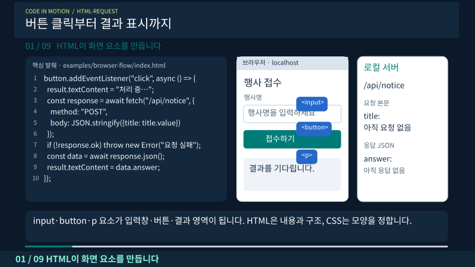
input·button·p 요소가 입력창·버튼·결과 영역이 됩니다. HTML은 내용과 구조, CSS는 모양을 정합니다.
2. 이벤트 처리 함수를 연결합니다
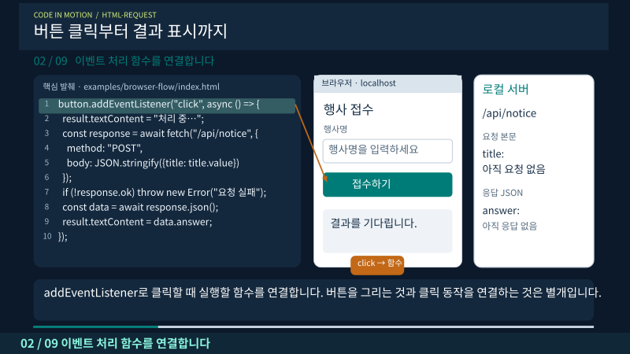
addEventListener로 클릭할 때 실행할 함수를 연결합니다. 버튼을 그리는 것과 클릭 동작을 연결하는 것은 별개입니다.
3. 입력하고 버튼을 누릅니다
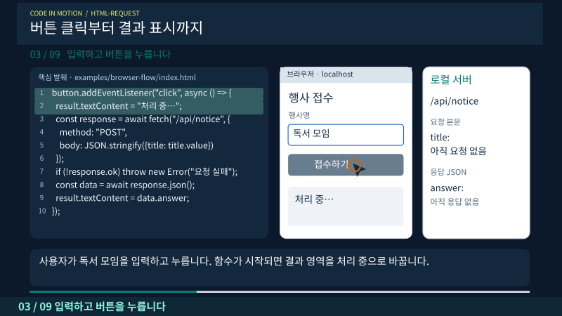
사용자가 독서 모임을 입력하고 누릅니다. 함수가 시작되면 결과 영역을 처리 중으로 바꿉니다.
4. 브라우저가 요청을 보냅니다
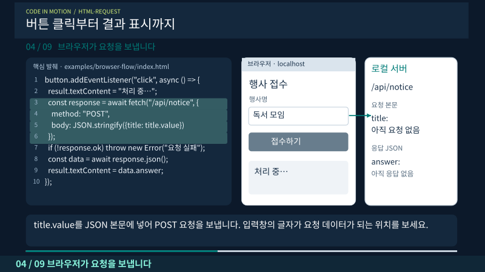
title.value를 JSON 본문에 넣어 POST 요청을 보냅니다. 입력창의 글자가 요청 데이터가 되는 위치를 보세요.
5. 서버가 입력을 처리합니다
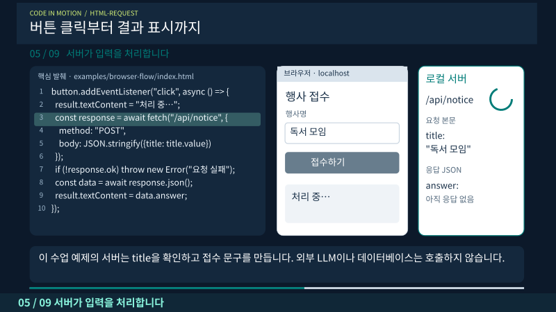
이 수업 예제의 서버는 title을 확인하고 접수 문구를 만듭니다. 외부 LLM이나 데이터베이스는 호출하지 않습니다.
6. JSON 응답이 돌아옵니다
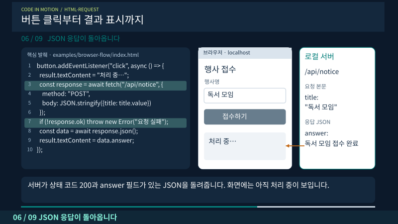
서버가 상태 코드 200과 answer 필드가 있는 JSON을 돌려줍니다. 화면에는 아직 처리 중이 보입니다.
7. 응답 본문을 읽습니다
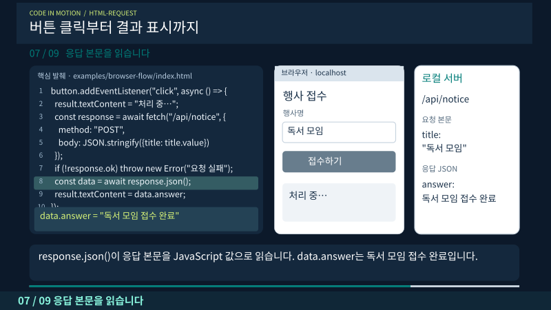
response.json()이 응답 본문을 JavaScript 값으로 읽습니다. data.answer는 독서 모임 접수 완료입니다.
8. JavaScript가 화면을 바꿉니다
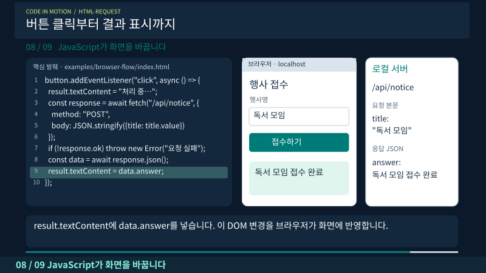
result.textContent에 data.answer를 넣습니다. 이 DOM 변경을 브라우저가 화면에 반영합니다.
9. 입력을 비워 다시 요청하면?
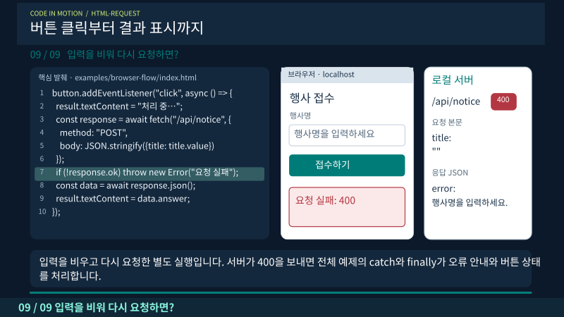
입력을 비우고 다시 요청한 별도 실행입니다. 서버가 400을 보내면 전체 예제의 catch와 finally가 오류 안내와 버튼 상태를 처리합니다.
그림의 코드를 글자로 읽기
button.addEventListener("click", async () => {
result.textContent = "처리 중…";
const response = await fetch("/api/notice", {
method: "POST",
body: JSON.stringify({title: title.value})
});
if (!response.ok) throw new Error("요청 실패");
const data = await response.json();
result.textContent = data.answer;
});그림에서 요청과 화면 갱신의 순서를 관찰하세요. 후반 수업에서 다룰 HTML 흐름입니다.
같은 흐름을 GIF로 보기
GIF는 펼쳤을 때 반복 재생합니다. 멈추려면 접으세요. 원하는 단계에서 멈추려면 위 SVG를 사용하세요. 동작 줄이기 설정에서는 첫 그림을 유지합니다.

문자열을 읽어 새 딕셔너리를 만들기
중괄호가 보인다고 모두 딕셔너리는 아닙니다. 처음 raw에는 JSON 글자가 든 문자열이 있습니다. json.loads(raw)가 반환한 새 Python 값을 data라고 부릅니다.
json.loads 한 줄에서 실제로 달라지는 값
data를 만든 뒤에도 raw가 문자열인 이유를 설명할 수 있나요?
data를 만든 뒤에도 raw가 문자열인 이유를 설명할 수 있나요?
json.loads가 새 딕셔너리를 반환해도 원본 raw는 문자열로 남습니다.
1 / 8 · 문자열을 먼저 봅니다
raw 전체가 str입니다. 중괄호와 null도 지금은 문자열 안의 글자입니다.
단계를 고르면 그 단계가 끝난 모습을 보여 줍니다. ‘이 단계 다시 재생’으로 값이 변하는 과정을 보세요. 화면이 작으면 확대 후 그림 영역을 좌우로 움직일 수 있습니다. 기기의 동작 줄이기 설정이 켜져 있으면 재생 버튼은 꺼지고 단계 선택으로 읽을 수 있습니다.
정지 그림과 설명 모두 읽기
1. 문자열을 먼저 봅니다
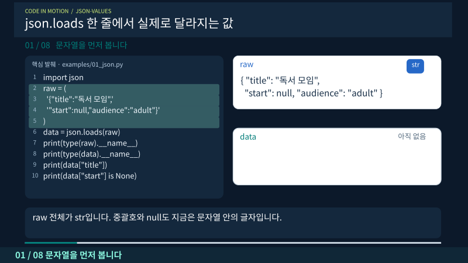
raw 전체가 str입니다. 중괄호와 null도 지금은 문자열 안의 글자입니다.
2. 실행할 줄을 찾습니다
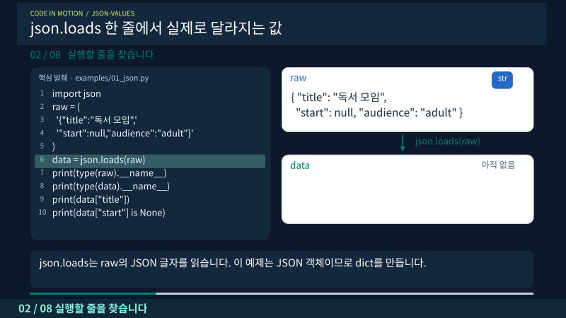
json.loads는 raw의 JSON 글자를 읽습니다. 이 예제는 JSON 객체이므로 dict를 만듭니다.
3. title의 값을 읽습니다
함수 안에서 새 값을 만드는 과정을 풀어 본 모형입니다. data에 담기는 것은 함수가 반환한 뒤입니다.
4. null을 Python 값으로 읽습니다
JSON의 null을 읽으면 Python에서는 None이 됩니다. start라는 키가 사라지는 것은 아닙니다.
5. 새 딕셔너리가 만들어졌습니다
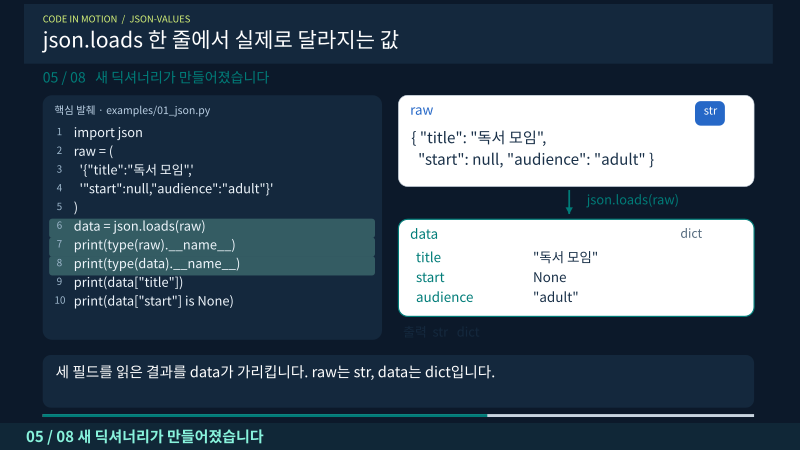
세 필드를 읽은 결과를 data가 가리킵니다. raw는 str, data는 dict입니다.
6. 키로 값을 꺼냅니다
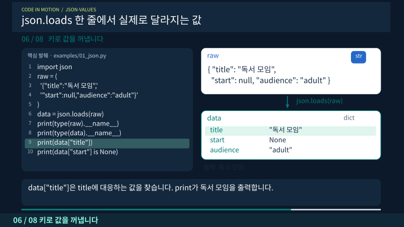
data["title"]은 title에 대응하는 값을 찾습니다. print가 독서 모임을 출력합니다.
7. 값이 없는 경우를 확인합니다
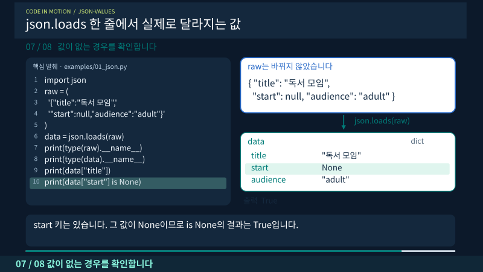
start 키는 있습니다. 그 값이 None이므로 is None의 결과는 True입니다.
8. 실행 뒤 두 변수를 다시 봅니다
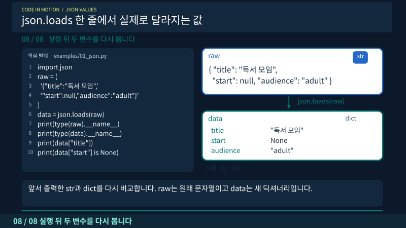
앞서 출력한 str과 dict를 다시 비교합니다. raw는 원래 문자열이고 data는 새 딕셔너리입니다.
그림의 코드를 글자로 읽기
import json
raw = (
'{"title":"독서 모임",'
'"start":null,"audience":"adult"}'
)
data = json.loads(raw)
print(type(raw).__name__)
print(type(data).__name__)
print(data["title"])
print(data["start"] is None)노트북 셀 01에서 JSON 문자열과 시작일 값을 확인할 수 있습니다.
같은 흐름을 GIF로 보기
GIF는 펼쳤을 때 반복 재생합니다. 멈추려면 접으세요. 원하는 단계에서 멈추려면 위 SVG를 사용하세요. 동작 줄이기 설정에서는 첫 그림을 유지합니다.

필드가 하나씩 만들어지는 화면은 이 한 줄의 의미를 풀어 보인 것입니다. Python 내부 파서의 실제 순서를 보여 주는 것은 아닙니다. 마지막 장면은 앞서 출력한 str과 dict를 다시 비교하는 복습입니다.
- 같은 내용의 12장 설명 ↗작은 코드·실행 결과·연습 해설로 이어집니다.
중첩 for문에서 지금 가리키는 항목 찾기
item은 output 목록의 항목 하나를 가리킵니다. part는 그중 message 안에 있는 content 목록의 조각 하나를 가리킵니다. 지금 어느 목록을 읽는지 놓치면 두 for문이 어렵게 느껴집니다.
중첩 응답에서 item과 part 따라가기
continue를 만났을 때 어떤 목록의 다음 항목으로 이동하나요?
continue를 만났을 때 어떤 목록의 다음 항목으로 이동하나요?
바깥 반복은 응답 항목을, 안쪽 반복은 메시지 본문 조각을 읽습니다.
1 / 7 · 중첩된 목록의 위치
바깥 목록은 output, 메시지 안의 목록은 content입니다. JSON 문자열은 text 안에 있습니다.
단계를 고르면 그 단계가 끝난 모습을 보여 줍니다. ‘이 단계 다시 재생’으로 값이 변하는 과정을 보세요. 화면이 작으면 확대 후 그림 영역을 좌우로 움직일 수 있습니다. 기기의 동작 줄이기 설정이 켜져 있으면 재생 버튼은 꺼지고 단계 선택으로 읽을 수 있습니다.
정지 그림과 설명 모두 읽기
1. 중첩된 목록의 위치
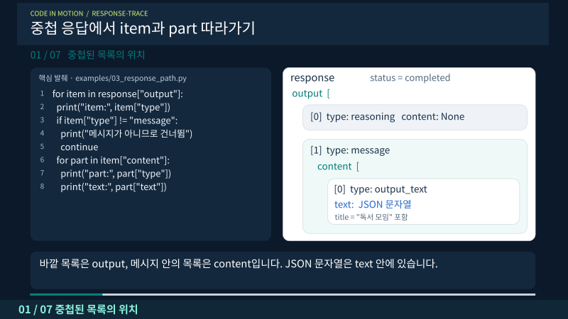
바깥 목록은 output, 메시지 안의 목록은 content입니다. JSON 문자열은 text 안에 있습니다.
2. 첫 item은 reasoning
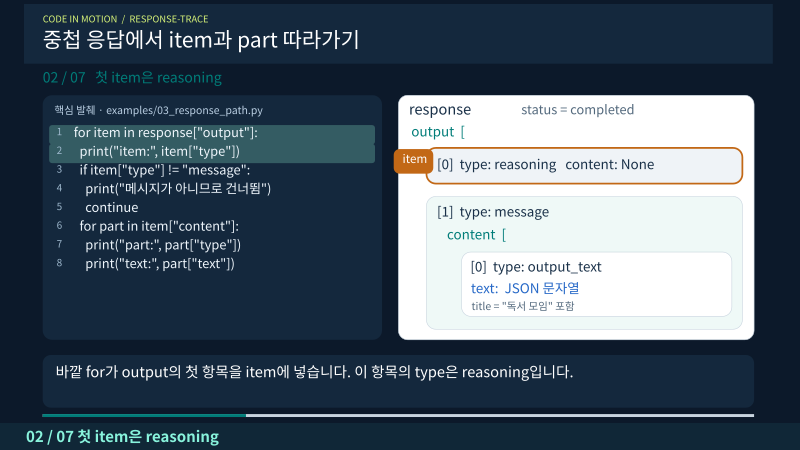
바깥 for가 output의 첫 항목을 item에 넣습니다. 이 항목의 type은 reasoning입니다.
3. continue로 건너뜁니다
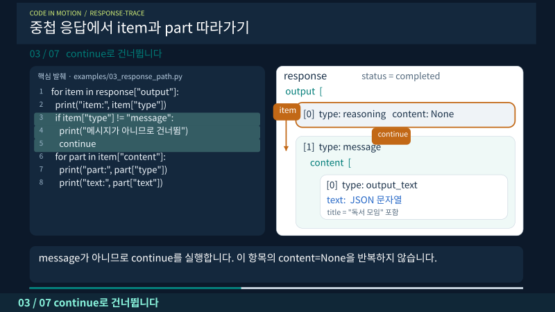
message가 아니므로 continue를 실행합니다. 이 항목의 content=None을 반복하지 않습니다.
4. 다음 item은 message
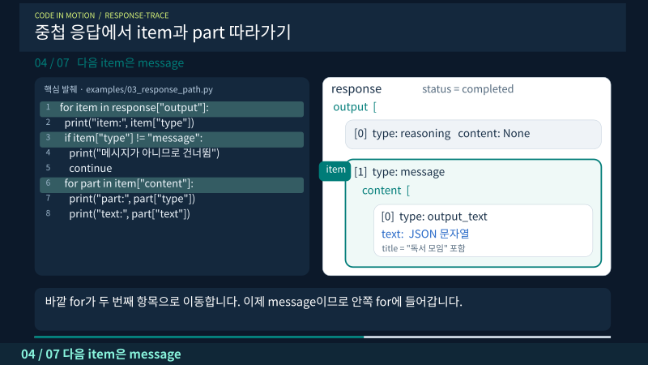
바깥 for가 두 번째 항목으로 이동합니다. 이제 message이므로 안쪽 for에 들어갑니다.
5. 안쪽 part는 내용 조각
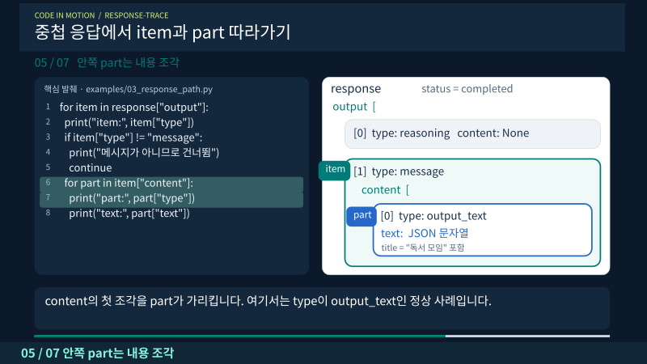
content의 첫 조각을 part가 가리킵니다. 여기서는 type이 output_text인 정상 사례입니다.
6. text의 문자열을 읽습니다
part["text"]에서 JSON 문자열을 꺼냅니다. 안내의 title은 이 문자열 안에 있습니다.
7. 출력과 구조를 대조합니다
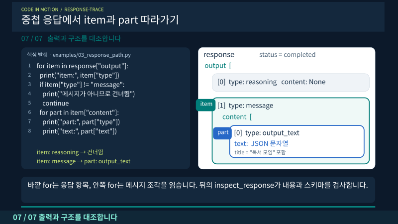
바깥 for는 응답 항목, 안쪽 for는 메시지 조각을 읽습니다. 뒤의 inspect_response가 내용과 스키마를 검사합니다.
그림의 코드를 글자로 읽기
for item in response["output"]:
print("item:", item["type"])
if item["type"] != "message":
print("메시지가 아니므로 건너뜀")
continue
for part in item["content"]:
print("part:", part["type"])
print("text:", part["text"])노트북 셀 05에서 응답의 메시지와 본문 조각을 확인할 수 있습니다.
같은 흐름을 GIF로 보기
GIF는 펼쳤을 때 반복 재생합니다. 멈추려면 접으세요. 원하는 단계에서 멈추려면 위 SVG를 사용하세요. 동작 줄이기 설정에서는 첫 그림을 유지합니다.

이 작은 예제의 메시지는 정상 output_text 한 조각입니다. 실제 응답의 거절·빈 문자열·잘못된 형식은 뒤의 제공 검사기 inspect_response에서 다룹니다.
- 같은 내용의 12장 설명 ↗작은 코드·실행 결과·연습 해설로 이어집니다.
부분 표시와 최종 반환 구분하기
화면에 보인 글자와 완료 상태는 서로 다른 값입니다. 왼쪽과 오른쪽은 같은 두 조각을 받습니다. 오른쪽만 완료 이벤트를 받지 못하면 어떻게 되는지 비교해 보세요.
글자는 같아도 완료 상태가 다릅니다
부분 문장이 완성돼 보여도 최종 반환을 기다려야 하는 이유는 무엇인가요?
부분 문장이 완성돼 보여도 최종 반환을 기다려야 하는 이유는 무엇인가요?
화면에 같은 문장이 보여도 완료 이벤트 수신 여부에 따라 반환과 중단이 갈립니다.
1 / 8 · 비어 있는 상태에서 시작
두 실행 모두 parts는 빈 리스트이고 completed는 False입니다. 오른쪽 실행에서는 완료 이벤트만 뺍니다.
단계를 고르면 그 단계가 끝난 모습을 보여 줍니다. ‘이 단계 다시 재생’으로 값이 변하는 과정을 보세요. 화면이 작으면 확대 후 그림 영역을 좌우로 움직일 수 있습니다. 기기의 동작 줄이기 설정이 켜져 있으면 재생 버튼은 꺼지고 단계 선택으로 읽을 수 있습니다.
정지 그림과 설명 모두 읽기
1. 비어 있는 상태에서 시작
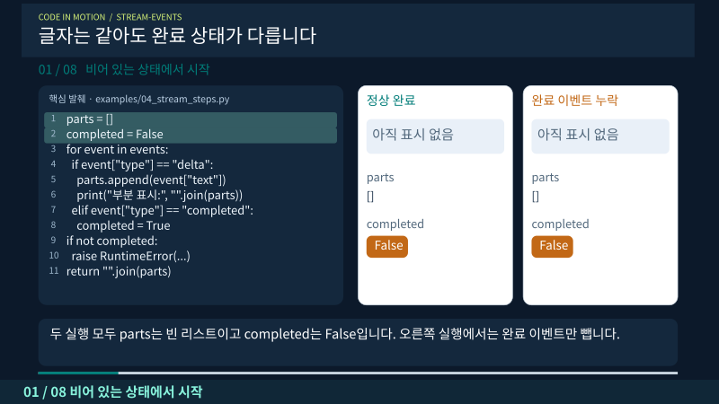
두 실행 모두 parts는 빈 리스트이고 completed는 False입니다. 오른쪽 실행에서는 완료 이벤트만 뺍니다.
2. 첫 조각이 도착합니다
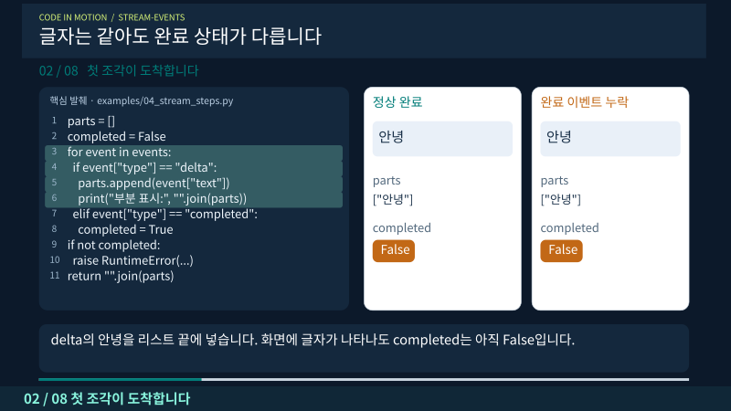
delta의 안녕을 리스트 끝에 넣습니다. 화면에 글자가 나타나도 completed는 아직 False입니다.
3. 둘째 조각이 도착합니다
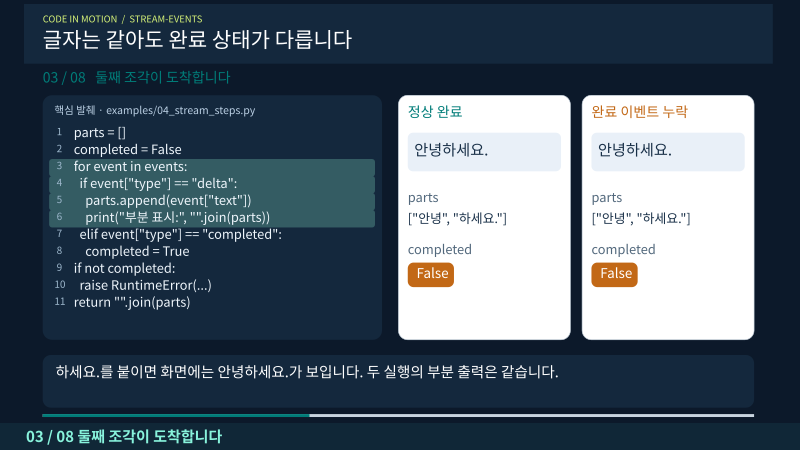
하세요.를 붙이면 화면에는 안녕하세요.가 보입니다. 두 실행의 부분 출력은 같습니다.
4. 같은 문장, 아직 미완료
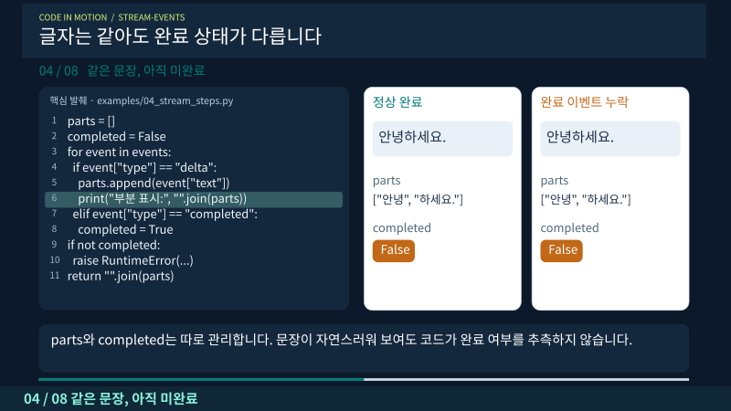
parts와 completed는 따로 관리합니다. 문장이 자연스러워 보여도 코드가 완료 여부를 추측하지 않습니다.
5. 완료 이벤트 유무가 갈립니다
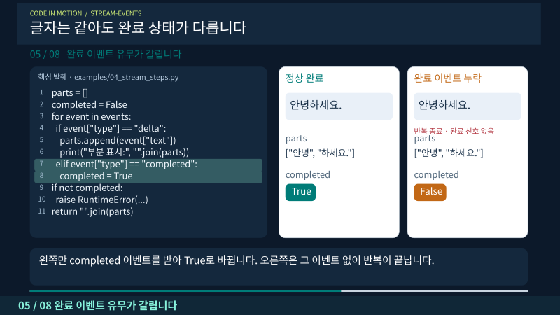
왼쪽만 completed 이벤트를 받아 True로 바뀝니다. 오른쪽은 그 이벤트 없이 반복이 끝납니다.
6. 반복문 뒤에서 검사합니다
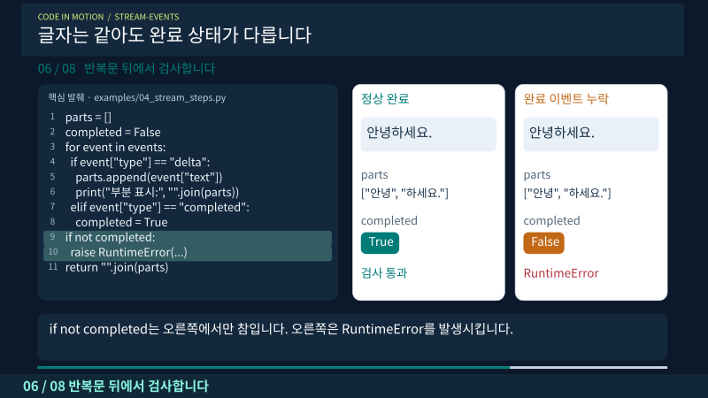
if not completed는 오른쪽에서만 참입니다. 오른쪽은 RuntimeError를 발생시킵니다.
7. 성공 반환과 중단 안내
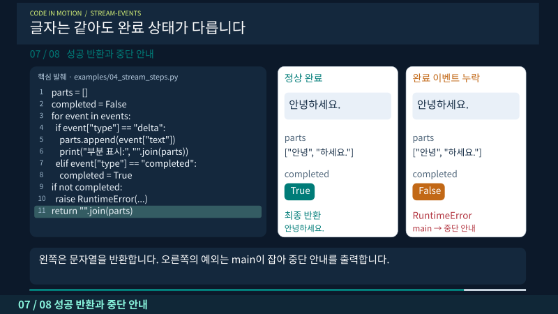
왼쪽은 문자열을 반환합니다. 오른쪽의 예외는 main이 잡아 중단 안내를 출력합니다.
8. 실제 출력으로 확인합니다
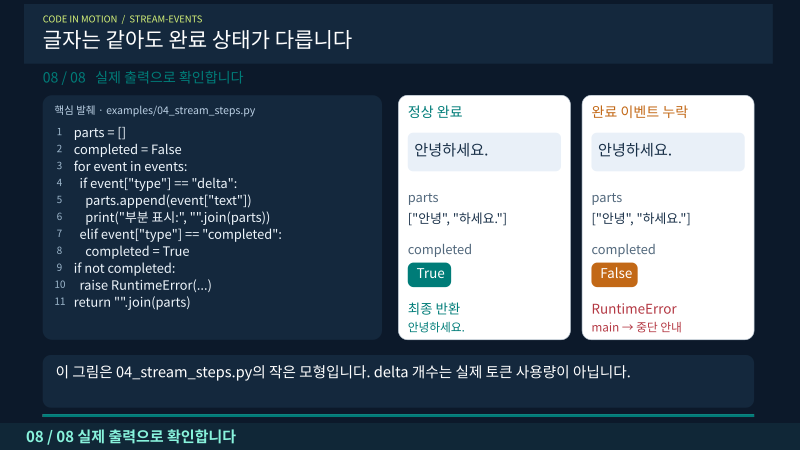
이 그림은 수신 순서를 보여 주는 모형입니다. delta 개수는 실제 토큰 사용량이 아닙니다.
그림의 코드를 글자로 읽기
parts = []
completed = False
for event in events:
if event["type"] == "delta":
parts.append(event["text"])
print("부분 표시:", "".join(parts))
elif event["type"] == "completed":
completed = True
if not completed:
raise RuntimeError(...)
return "".join(parts)노트북 셀 08에서 완료 신호 유무에 따른 결과를 비교할 수 있습니다.
같은 흐름을 GIF로 보기
GIF는 펼쳤을 때 반복 재생합니다. 멈추려면 접으세요. 원하는 단계에서 멈추려면 위 SVG를 사용하세요. 동작 줄이기 설정에서는 첫 그림을 유지합니다.

마지막의 return 줄은 왼쪽 성공 실행에만 도달합니다. 오른쪽은 그 전에 예외가 발생하고, 호출한 main이 중단 안내를 출력합니다. 이 예제의 delta 이벤트는 설명용 이름이며 실제 SDK 이벤트 이름은 본문에서 따로 대조합니다.
- 같은 내용의 12장 설명 ↗작은 코드·실행 결과·연습 해설로 이어집니다.
제작과 확인 범위
코드와 값의 관계는 기존 예제와 대조한 설명입니다. 본문에는 벡터 글자와 도형으로 만든 SVG를 넣었고, 같은 사례의 GIF도 저장할 수 있게 연결했습니다. MP4 플레이어는 현재 본문에서 제외했습니다. 실제 학습자 이해도와 수업 소요 시간을 측정한 결과는 아닙니다.
- Python json ↗JSON 값과 Python 값의 대응
- MDN · DOM 소개 ↗화면 요소를 코드로 읽고 변경하기
- MDN · Fetch 사용 ↗요청·응답 상태·응답 본문 읽기
- 장별 검증 기록 ↗실행·화면 검수와 남은 확인 범위
- MDN · SVG 시간 이동 ↗단계 선택에 쓰는 SVG 문서 시간 제어